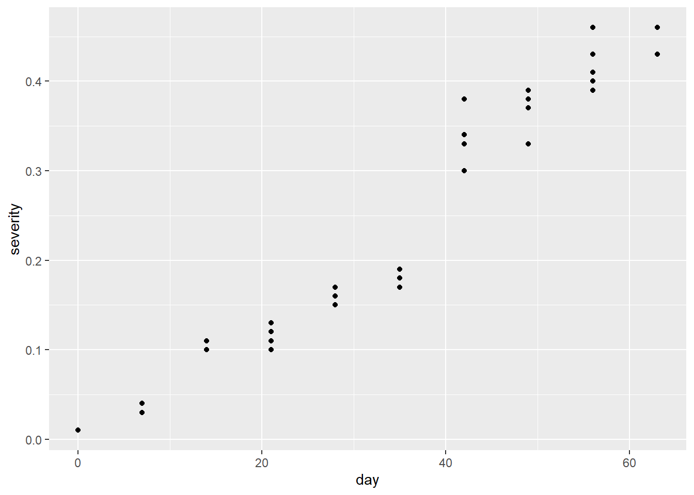
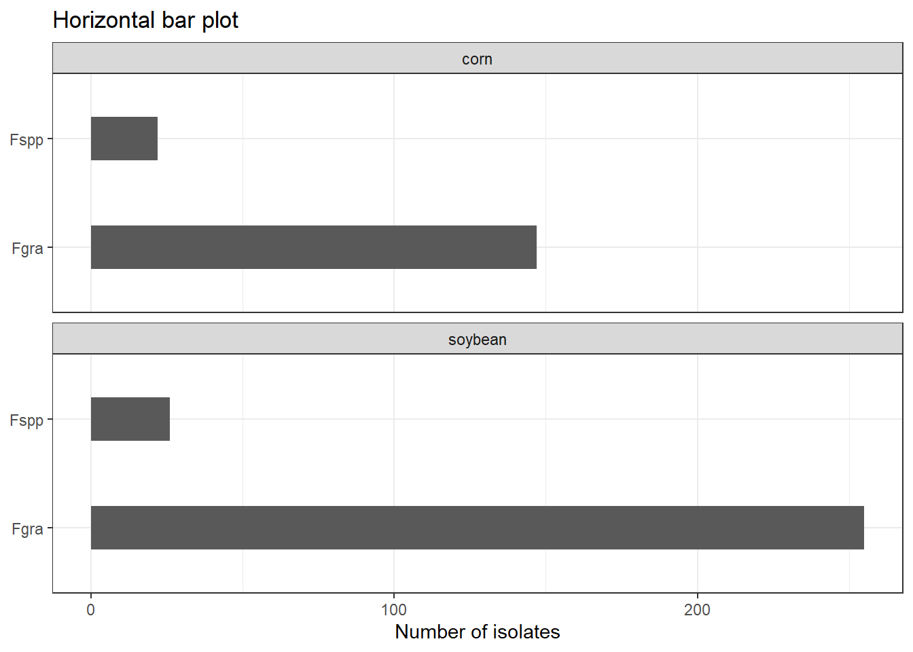

library(tidyverse)
mg <- read_csv("dados-diversos.csv")GGplot
Gráficos ggplot
Importar dados
Quando coloca |> você já ta dentro dos dados. Você não precisa colocar o argumento dados no primeiro argumento do ggplot.
Alterando a cor de cada fator
mg |>
ggplot(aes(Irrigation, severity,
color = Irrigation)) +
geom_point()Alterando o símbolo alpha, dois valores iguais ficam de outra cor, quanto mais escuro mais pontos
mg |>
ggplot(aes(Irrigation, severity,
shape = Irrigation, color = Irrigation)) +
geom_point(alpha = 0.5)Alterando agora o gráfico e filtrando cada repetição filter filtra linhas
mg |>
filter(rep == 1) |>
ggplot(aes(day, severity,
shape = Irrigation)) +
geom_point(alpha = 0.5) +
geom_line() Alterando agora o gráfico, criando uma face pra cada repetição
mg |>
ggplot(aes(day, severity,
shape = Irrigation)) +
geom_point(alpha = 0.5) +
geom_line() +
facet_wrap(~rep)
Filtrando variáveis com select(var1, var2) neste gráfico não tem nenhum outline, fora das linhas do box. group = esta criando pra cada dia
mg |>
select(day, rep, severity) |>
ggplot(aes(day, severity,
group=day)) +
geom_point() 
Calculando o valor médio das repetições group = agrupou severidade por dia. summarize(definiu que seria a média de severidade e criou a variável “sev”) ficou duas variáveis dias e média de severidade mudei severidade pra porcentagem só multiplicando por 100 ylim: coloca o limite do y Temas pra mudar: theme_light theme_minimal scale_x_continuos : muda a escala do eixo x
mg2 <- mg |>
select(day, rep, severity) |>
group_by(day) |>
summarize(sev = mean(severity))
mg2 |>
ggplot(aes(day, sev*100)) +
geom_line(color = "darkorange") +
geom_point(size = 2,
color = "darkorange") +
scale_x_continuous(breaks = c(0,7,14,21,28,35,42,49,56,63)) +
scale_y_continuous(n.breaks = 5, limits = c(0,100)) +
labs(x = "Time (days)", y = "Severity (%)", title= "My first ggplot", subtitle= "It is beautiful", caption = "Source: FIP 606") +
theme_minimal() ggsave("myfistggplot.png", bg = "white",
width = 4,
height = 3)Criando pra cada tipo de irrigação
library(MetBrewer)
mg5 <- mg |>
group_by(day, Irrigation) |>
summarize(sev = mean(severity))
m <- mg5 |>
ggplot(aes(day, sev*100, color= Irrigation)) +
geom_line() +
scale_x_continuous(breaks = c(0,7,14,21,28,35,42,49,56,63)) +
scale_y_continuous(n.breaks = 5, limits = c(0,100)) +
labs(x = "Time (days)", y = "Severity (%)", title= "GGplot2",
subtitle= "With two irrigations", caption = "Source: FIP 606") +
theme_minimal()+
scale_color_manual(values = met.brewer("Java"))
ggsave("myfistggplot2.png", bg = "white",
width = 4,
height = 3)
mg5# A tibble: 20 × 3
# Groups: day [10]
day Irrigation sev
<dbl> <chr> <dbl>
1 0 Drip 0.01
2 0 Furrow 0.01
3 7 Drip 0.0367
4 7 Furrow 0.04
5 14 Drip 0.107
6 14 Furrow 0.103
7 21 Drip 0.117
8 21 Furrow 0.103
9 28 Drip 0.153
10 28 Furrow 0.157
11 35 Drip 0.18
12 35 Furrow 0.187
13 42 Drip 0.323
14 42 Furrow 0.353
15 49 Drip 0.357
16 49 Furrow 0.383
17 56 Drip 0.42
18 56 Furrow 0.413
19 63 Drip 0.43
20 63 Furrow 0.45 Outros modelos
##Importa dados
library(tidyverse)
library(readxl)
mg <- read_excel("dados-diversos.xlsx")Visualiza
função geom-jitter separa os pontos, diferente do geom_point que sobrepõem, e width é a largura entre os pontos scale_y_continuous > pra definir a escala do y
Gráfico de barra com desvio padrão
da pra tirar o geom_col também e deixar só o desvio e a média
library(ggthemes)
pmeans <- mg |>
group_by(trat) |>
summarise(comp_mean = mean(comp),
comp_sd = sd(comp)) |>
ggplot(aes(trat, comp_mean))+
#geom_col(fill = "orange", width = 0.5)+
geom_point()+
scale_y_continuous(limits = c(7,20),
n.breaks = 6)+
geom_errorbar(aes(ymin = comp_mean - comp_sd,
ymax = comp_mean + comp_sd,
width = 0.05))+
labs(x = NULL, y = "Lesion size (mm)",
title= "",
subtitle= "",
caption = "")+
theme_minimal()
pmeans ggsave("figs/mean_sd.png",
bg = "white", width = 4, height= 4)Salvar dois gráficos juntos
se colocar um | outro = vai ficar um do lado do outro se colocar um / outro = vai ficar um em cima do outro
library(patchwork)
(m | pmeans) +
plot_annotation(tag_levels = 'A', title= 'Gráficos que impressionam') ggsave("figs/combined.png",
bg = "white", width = 6, height= 4)Barras laterais
survey <- read_excel("dados-diversos.xlsx",
sheet= "survey")
survey |>
filter(state == "RS") |>
count(species, residue) |>
ggplot(aes(species, n))+
geom_col(width = 0.4)+
coord_flip()+
facet_wrap(~residue, ncol= 1)+
theme_bw()+
labs(x = NULL, y = "Number of isolates", title= "Horizontal bar plot")
ggsave("figs/barplotfacewrap.png",
bg = "white", width = 6, height= 4)